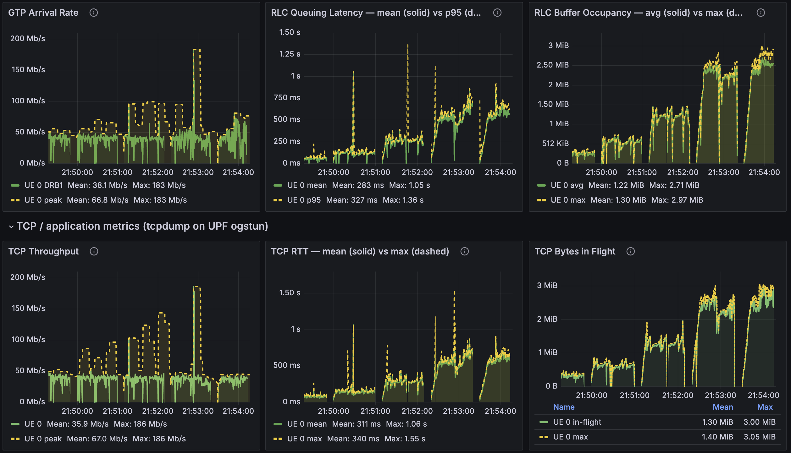

Miscellaneous¶
Reference material for the Open AI-RAN tutorial: loading codelets by hand, the telemetry dashboards, the hooks the demos use and the repository layout.
Telemetry with Codelets¶
--telemetry loads the telemetry for you. This section shows what it loads and how to load a
codeletset yourself.
Codeletsets and deployments¶
Two levels of YAML drive every load.
(a) The codeletset groups codelets that share state, in jrtc-apps/codelets/<layer>/. It binds
each .o to a hook, links shared maps and names the serializers for the output. The MAC statistics
codeletset (codelets/mac/mac_stats.yaml) has this shape:
codeletset_id: mac_stats
codelet_descriptor:
# (1) the REPORTER: owns the output channels, runs on a periodic hook
- codelet_name: mac_stats_collect
codelet_path: ${JBPF_CODELETS}/mac/mac_stats_collect.o
hook_name: report_stats # <- periodic timer hook
priority: 1
out_io_channel:
- name: output_map_crc
forward_destination: DestinationNone
serde:
file_path: ${JBPF_CODELETS}/mac/mac_sched_crc_stats:crc_stats_serializer.so
protobuf:
package_path: ${JBPF_CODELETS}/mac/mac_sched_crc_stats.pb
msg_name: crc_stats
# ... output_map_bsr / output_map_phr / output_map_uci
# (2) the COLLECTORS: one per datapath hook, no output of their own;
# they accumulate into the reporter's maps via linked_maps
- codelet_name: mac_sched_crc_stats
codelet_path: ${JBPF_CODELETS}/mac/mac_sched_crc_stats.o
hook_name: mac_sched_crc_indication # <- fires on every CRC indication
priority: 1
linked_maps:
- map_name: stats_map_crc
linked_codelet_name: mac_stats_collect
linked_map_name: stats_map_crc
- map_name: crc_hash
linked_codelet_name: mac_stats_collect
linked_map_name: crc_hash
This collector and reporter split is the standard jbpf telemetry pattern. The hot-path codelets only bump counters in a shared map, and one codelet on a periodic hook serializes and emits.
(b) The deployment is what you hand to jrtc-ctl, in jrtc-apps/jrtc_apps/<app>/. It names the
decoder, an optional Python xApp, the jbpf device and the codeletsets. A codelet-only deployment, with
the decoded JSON in the jrtc-decoder log, is enough to start. Create
jrtc-apps/jrtc_apps/mac/deployment_mac.yaml:
name: mac_stats
decoder:
- type: decodergrpc
host: jrtc-decoder.ran.svc.cluster.local
port: 20789
jbpf:
device:
- id: 1
host: srs-gnb-du1-proxy.ran.svc.cluster.local
port: 30450
codelet_set:
- device: 1
config: ${JBPF_CODELETS}/mac/mac_stats.yaml
jrtc_apps/ and codelets/ are mounted into jrtc-0 as /apps and /codelets, so the new file is
visible in the pod at once.
Load and unload a codeletset¶
jrtc-ctl always connects to 127.0.0.1:30450; a forwarder in jrtc-0 bridges that to the gNB’s jbpf
proxy. --telemetry starts it. If you brought the UEs up without it, start it and copy the codelet
directories into the gNB container, where the gNB’s jbpf agent loads each serializer from:
kubectl cp telemetry/fwd30450.py ran/jrtc-0:/tmp/fwd30450.py -c jrtc
kubectl exec -n ran jrtc-0 -c jrtc -- bash -c 'grep -qi 76F2 /proc/net/tcp && echo "forwarder already listening" ||
{ nohup setsid python3 -u /tmp/fwd30450.py >/tmp/fwd30450.log 2>&1 </dev/null & disown; sleep 2; cat /tmp/fwd30450.log; }'
kubectl exec -n ran srs-gnb-du1-0 -c ocudujbpf -- mkdir -p /codelets
for d in upt ue_contexts mac rlc pdcp rrc ngap; do
kubectl cp jrtc-apps/codelets/$d ran/srs-gnb-du1-0:/codelets/ -c ocudujbpf
done
Define this helper in every terminal that loads or unloads, then load the MAC statistics:
JRTC() { kubectl exec -n ran jrtc-0 -c jrtc -- bash -c \
"export JRTC_APPS=/apps JBPF_CODELETS=/codelets; /jrtc/out/bin/jrtc-ctl $*"; }
JRTC 'load -c /apps/mac/deployment_mac.yaml'
A successful load prints loaded app, successfully upserted proto package and successfully associated stream ID, and the gNB registers each codelet on its hook:
kubectl exec -n ran srs-gnb-du1-0 -c ocudujbpf -- \
grep -aoE "Registered codelet [a-z_0-9]+ to hook [a-z_0-9]+" /tmp/gnb.stdout | tail
Registered codelet mac_stats_collect to hook report_stats
Registered codelet mac_sched_crc_stats to hook mac_sched_crc_indication
Registered codelet mac_sched_bsr_stats to hook mac_sched_ul_bsr_indication
...
With traffic running, watch the decoded per-UE CRC, BSR, PHR, UCI and HARQ statistics:
kubectl logs -n ran jrtc-0 -c jrtc-decoder --tail=40 -f
Unload with the same file; the hooks go back to being no-ops and the gNB keeps running:
JRTC 'unload -c /apps/mac/deployment_mac.yaml'
Avoid loading and unloading in a tight loop: it can wedge the app loader.
Symptom |
Cause |
Fix |
|---|---|---|
|
the forwarder is not running in |
start it, as above |
|
the app is already loaded |
unload it, then load again |
no |
the codelet directory is missing inside the |
copy |
|
the gNB’s jbpf agent died |
re-run the bring-up |
app loaded but no codelets deployed |
a partial unload left state behind |
delete the app by its numeric id: |
Watch it in Grafana¶
--telemetry loads two xApps into jrtc-0:
upt_app(jrtc_apps/upt): per-packet user-plane telemetry. Per-UE downlink GTP arrival rate, RLC queuing latency and RLC buffer occupancy in 134 ms buckets. Demo 3 shows how these codelets are written.The dashboard xApp (
jrtc_apps/dashboard): per-layer, per-UE MAC, RLC, PDCP, RRC and NGAP statistics as JSON in thejrtc-0log, plus per-UE DL CQI, UL SNR, DL MCS, DL MAC throughput and each UE’s identity chain, from IMSI and IP down to its C-RNTI.
The TCP row comes from tcp_probe.py, which runs on the host and captures on the UPF. Start it after
each bring-up, as its own command:
MAP=$(bash scripts/core_ue_info.sh --tcp-map)
setsid nohup python3 telemetry/tcp_probe.py --map "$MAP" >/tmp/tcp_probe.log 2>&1 </dev/null &
Open http://localhost:30490/d/upt-userplane (admin / admin). From a laptop, forward the port first
with ssh -N -L 30490:localhost:30490 <user>@<testbed-host>. The dashboard has four rows: UE identity,
Radio / MAC, RLC / user plane and TCP. Panels stay empty until traffic runs, since the codelets fire
per packet. One UE under DL iperf3 looks like this:

The RLC row is in-RAN telemetry from the codelets; the TCP row is the same run seen from outside the RAN. In this run TCP RTT (mean 311 ms) tracks RLC queuing latency (mean 283 ms), and TCP bytes in flight (mean 1.30 MiB) track RLC buffer occupancy (mean 1.22 MiB): two independent measurements, one curve. The RLC queue is where the latency lives, which is the starting point of Demo 3.
Verification cheat sheet¶
# codelets compile and pass the verifier
cd "$REPO_ROOT/jrtc-apps/codelets" && rm -f upt/*.o && ./make.sh -d upt && cd "$REPO_ROOT"
# codelets registered on their hooks in the gNB
kubectl exec -n ran srs-gnb-du1-0 -c ocudujbpf -- \
grep -aoE "Registered codelet [a-z_0-9]+ to hook [a-z_0-9]+" /tmp/gnb.stdout | tail
# apps loaded in jrtc (ids are numeric)
kubectl exec -n ran jrtc-0 -c jrtc -- curl -s http://127.0.0.1:3001/app
# metrics reaching VictoriaMetrics
curl -s http://localhost:30491/api/v1/label/__name__/values
Hooks used in this tutorial¶
Hook |
Layer |
Type |
Used by |
|---|---|---|---|
|
periodic |
monitor |
|
|
MAC |
monitor |
|
|
PDCP |
monitor |
|
|
RLC |
monitor |
|
|
MAC |
monitor |
|
|
MAC |
control |
|
|
RLC |
control |
|
|
MAC |
control |
|
|
MAC |
control |
|
|
PDCP |
control |
|
Repository layout¶
Path |
What |
|---|---|
|
jbpf-enabled OCUDU gNB source, |
|
the UE image, the C++ broker ( |
|
Duranta OAI |
|
the broker container image |
|
Open5GS 5G core Helm chart |
|
codelets, one directory per layer or feature |
|
Python xApps and their deployment YAMLs |
|
EdgeRIC-RT muApps, PPO trainer and trained models (Demo 2) |
|
buffer-cap scripts, traffic and dashboards (Demo 3) |
|
VictoriaMetrics and Grafana stack, dashboard JSON, forwarder, TCP probe |
|
bring-up, traffic, trace control and demo scripts |
Further reading¶
jrt-controller: https://github.com/microsoft/jrtc
jrtc-apps (upstream codelets and xApps): https://github.com/microsoft/jrtc-apps
EdgeRIC (NSDI’24): https://www.usenix.org/conference/nsdi24/presentation/ko